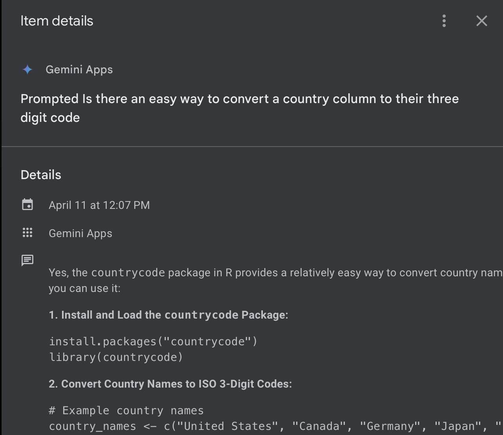

Download the source code for the template here:
Independent Learning (IL):
These objectives show your ability to seek out new information and adapt to new tools to solve data analysis problems.
[IL-1] Adding new skills:
- I can find and adopt new packages to accomplish tasks.
- I can adapt to different syntax styles (tidy, base, formula style, data.table).
Level: 3
Justification:
In Lab 4 I learned and applied html syntax to format certain text to output in the way I envisioned. In Lab 4, I figured out how to trouble-shoot the errors I was receiving while trying to publish my Shiny app. In the end, I had learned that it was not necessary to use the {here} package if I was already publishing the data that was being referenced by my Quarto document that had the app server and UI code. To complete the requirements for Lab 4, I learned how to adopt Shiny syntax into a Quarto document, mostly by trial and error.
I had not realized until beginning the shiny app for this lab assignment that creating UI features has somewhat of a different syntax than creating a Shiny app in an app.R file.
In a past summer project, I was assigned the task of creating a Shiny app, but at the time I was using base R syntax. This was also my first time dealing with reading in data sets for a shiny app/dashboard.
In Lab 4, I was able to adapt to using tidy syntax and integrating Shiny functionality within a Quarto document by mainly referencing official documentation and using my previously published Shiny app (which can be found in my Shiny account).
[IL-2] Online resources:
- I can use online resources (e.g., Google, ChatGPT, StackOverflow, YouTube) to solve problems, debug, or find new tools.
- I can use tutorials, etc. to enhance my understanding of new concepts.
- I can find source code for similar projects to use as starting points for my own.
Level: 3
Justification:
For Lab 3, I used the online resources provided by Dr. T about creating static dashboards, along with official quarto documentation. Specifically, I followed along with the tutorial video on shiny dashboards, then applied my new skills to create the static dashboard in Lab 3.
For Lab 2, I utilized Gemini to help me build base code and explore plotting options for my map and interactive plots with the R packages {leaflet}, {plotly},{rnaturalearth}, {countrycode}, and {rnaturalearth}. I included example prompts and responses from Gemini below.
# Insert documentation of using Gemini in Lab 2
knitr::include_graphics(path = here::here("reflection-images",
"LAB2-left-justify-plotly-image1.png"))
knitr::include_graphics(path = here::here("reflection-images",
"LAB2-left-justify-plotly-image2.png"))# Insert documentation of using Gemini in Lab 2
knitr::include_graphics(path = here::here("reflection-images",
"LAB2-using-countrycode-1.png"))
knitr::include_graphics(path = here::here("reflection-images",
"LAB2-using-countrycode-2.png"))
As I mentioned in the previous section, for Lab 4 I used my previously published Shiny app (which can be found in my Shiny account) to help refresh my memory on Shiny syntax and how to create a Shiny app. I referenced official documentation for quarto dashboards to help me understand how to implement Shiny within a Quarto document.
IL Summary
Reproducible Workflow (RW):
These objectives show your ability to produce artifacts and deliverables that are organized, documented, version tracked, and responsibly designed.
[RW-1] File, code, and data management:
- I can use Git and GitHub to track my progress (creating repos, cloning, forking, pull requesting).
- I always use R Projects and the {here} package to organize my scripts, notebooks, data, and applications.
- I always use pull requests when collaborating with others.
Level: 3
Justification:
For all my lab assignments, I forked the lab repository given by Dr. T to start each assignment.
I have extensively used the
{here}package and am very comfortable using it to read in data. My main example was when I was using thehere()function throughout my data-preproc.R script. This was the script that read in data subsets which were pre-processed. This was to avoid my immediate crashing when my interactive Shiny dashboard was published. Every plot in Lab 4 was created using the data frames read in usinghere(). I used here in Lab 2 as well. All in all, I feel I have a very good understanding of usinghere()to read in data sets.
[RW-2] Notebooks:
- I can use Quarto to produce a reproducible notebook and polished rendered documents
- I can use appropriate chunk options (echo, error, cache, etc.) to render my Quarto document quickly and cleanly.
Level: 3
Justification:
For Lab 4, I worked within a Quarto document to convert my static dashboard into an interactive Shiny dashboard. Throughout the Quarto document for my Lab 4, I labelled the code chunks appropriately with the
labelchunk option.For Lab 2, I utilized the global
code-foldchunk option to hide the code in my rendered html; based on feedback from Dr. T, I changed this option when converting Lab 2 to the respective blog post (Advanced Visualization) In the blog post, I useecho: falseto hide the code when the blog went online, along with setting global warning and error options in the Quarto document for the blog post.
[RW-3] Code style
- My code is clear, readable, well-organized, and well-commented.
Level: 3
Justification
- For Lab 4, I commented throughout the code to explain the few custom functions, online sources I referenced that weren’t official documentation, references to use of Gemini to help write code.
- I don’t just have one code chunk but have them separated by code functionality (i.e. one code chunk to load packages and server code, separate code chunks for different assorted plot output) throughout so that my Quarto document code is readable.
RW Summary

Technical Communication (TC):
These objectives show your ability to communicate the processes you have implemented in your code, as well as the data conclusions and results.
[TC-1] Project summaries:
- I can create clear and succinct summaries of a project.
- I accurately interpret statistical or modeling results.
- I consider the appropriate scope and impact of my project results.
Level: 1
Justification:
For my dashboard labs (Lab 3 and Lab 4), I was able to communicate the information that were displayed in the box plot, the leaflets, and the chloropleth map. I wrote brief backgrounds on what information was used to create the plots. For example on the 2020 page, I wrote a background on how the 2020 survey was focused more on mental health and so there were summary tables in Lab 3 that were about related topics to mental health: anxiety/depression and social media.
[TC-2] Documentation:
- I can create a user-friendly dashboard.
- I provide ample documentation for my custom functions.
Level: 3
Justification:
In Lab 4, I have an instruction card on the 2020 page in the dashboard to tell the user how the sliders work.
The dropdown menu in the tabset with the chloropleth graph on the vaccines page has a prompt that asks what the user wants to see on the map, which keeps that user input option pretty straightforward.
There is commented documentation in the Quarto document used to create the interactive dashboard that explains each custom function I used/made.
TC Summary

Data Manipulation (DM):
These objectives relate to the collection, cleaning, processing, and preparing of datasets for analysis.
[DM-1] Data Preparation
- I can read in datasets to R, including untidy ones.
- I can clean datasets to deal with missing data, typos, poor formatting, etc.
Level: 3
Justification:
As previously mentioned, I read in all data and preprocessed them in the R script called data-preproc.R within my Lab 4 repository/project directory. For example, I used the str_split() function multiple times to end up with a tibble containing a column of column names and a column with their country code. I started from the single cell in the data dictionary that contained all countries and their codes in one comma-separated string.
[DM-2] Data Wrangling
- I can cleverly use pivoting, separating, grouping, and joining to wrangle data.
- I can use mapping (
purrr) to perform repeated tasks.
Level: 2
Justification:
With help from Gemini to understand how to use the countrycode package, I used data joining to create the necessary dataframe format to plot the chloropleth map in my Lab 3 and Lab 4. For the data wrangling that was used to preprocess my data for the plots in the lab, I utilized pivoting when making the summary statistics for the 2020 responses relating to social media and anxiety.
[DM-3] Data Formats
- I can use API urls to access JSON data and convert it into a data frame
- I can scrape data from the web and convert it into a data frame
## Fill in the line below with your self-assigned level for this objective.
my_level <- 1
portfolio_levels <- portfolio_levels %>%
bind_rows(tibble(Objective = "DM-3",
Level = my_level))Level: 1
Justification
DM Summary

Professional Visualization (PV):
[PV-1] Clear & Accessible Visualizations
- I can make my plots more clear by removing the legend and adding annotations.
- I can edit the titles, subtitles, captions, axis labels, etc. to create a clearly labelled plot.
- I can choose colors (“scales”) and themes to make a visually pleasing and accessible plot.
Level: 3
Justification:
For the interactive {plotly} plot in Lab 4 that was inspired one of the charts in the WGM 2018 report, I did not put a legend and instead utilized axes labels and the plot title to communicate the contents in the graph. I chose a red-orange color scale that matched the theme of the interactive dashboard, and implemented the use of the plotly tooltip to show the country name and regiin, plus the x/y values.
[PV-2] Dynamic Visualizations
- I can use a package like {gganimate} to create self-contained gifs.
- I can use a package like {plotly}, {ggplotly}, {leaflet}, {ggirafe}, etc. to make interactive html widgets.
Level: 2
Justification:
I created intricate and neat animated plots using the {plotly} and {leaflet} packages in Lab 2. For example, the chloropleth plot made with {leaflet} displays the country name (for countries that have data for the specific statistic of interest) along with the statistic percentage when the user hovers over the country. In this lab, the statistic was the percentage of people who believe that vaccines are safe. When I first made this plot, I referenced Gemini to guide how I could make the {leaflet} with the {rnaturalearth} package.
- Included below is screenshots of me using Gemini to help me make the referenced
{leaflet}:
# Insert documentation of using Gemini in Lab 2
knitr::include_graphics(path = here::here("reflection-images",
"LAB2-leaflet-chloropleth-base-code-1.png"))knitr::include_graphics(path = here::here("reflection-images",
"LAB2-leaflet-chloropleth-base-code-2.png"))[PV-3] Interactive Visualizations
- I can use Shiny or webR to create visualizations that react to a user’s input.
Level: 3
Justification:
- In the Lab 4 interactive dashboard that changes the displayed interactive chloropleth based on the user’s a statistic of interest. This chloropleth is in the “Map” tabset on the first page, titled 2018 Opinion: Vaccines of the interactive dashboard. I figured out on my own how to use the reactive
renderLeaflet({})function to create the chloropleth map that changes based on the user’s input into the dropdown menu asking, “What Global Opinion Do You Want to See on the Map?”.
PV Summary

Code Design, Algorithms, Iteration (CDAI):
These objectives ask you to design code-based approaches to statistical computing problems, usually involving iteration to a stopping condition.
[CDAI-1] R Programming Language
- I understand non-standard evaluation (aka “tidy eval” or “unquoted objects”), and I can use tunneling in my functions.
- I understand functional programming, and I can use functions as objects in my code design.
Level: 1
Justification:
[CDAI-2] Object Handling
- I have built in checks for possible input problems
- I can make reasonable choices in my code design about when to save intermediate objects.
- I can convert objects between types and structures as needed.
Level: 1
Justification:
[CDAI-3] Speed and Efficiency
- I can recognize moments of possible slowdown in my code, and use built-in functions or parallelizing to speed them up.
- I always use and design vectorized functions whenever possible.
Level: 1
Justification:
[CDAI-4] Supporting Functions
- I write helper / shortcut functions to streamline repeated tasks and make my code easier to read.
- I use intermediate functions to streamline repeated or looping processes.
Level: 1
Justification:
[CDAI-5] Algorithmic Process
- I can invent and implement my own iterative algorithm.
- My loops are clean and efficient.
- I have built in checks for possible problems or extreme cases in the algorithm.
Level: 1
Justification:
[CDAI-6] Generative Art
- I can apply a variety of generative art functions to make a visually pleasing piece.
- I can explain why particular changes to the code result in particular differences in the visualization.
Level: 1
Justification:
CDAI Summary

Overall Summary

Grade
Based on the summary plot above, I believe I have earned a ____ in STAT 541.